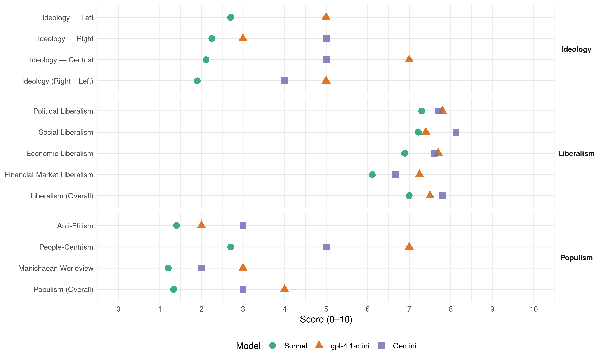

DUI/BDI (North Macedonia, 2016)
manifesto_id 89940_201612
Get full text: This site shows derived annotations and short verbatim quotes only. The full manifesto text is © Manifesto Project / WZB — obtain it via manifesto-project.wzb.eu using the manifesto_id above.
Headline scores
| Dimension | Sonnet | gpt-4.1-mini | Gemini |
|---|---|---|---|
| Populism (Overall) | 1.3 | 4.0 | 3.0 |
| Anti-Elitism | 1.4 | 2.0 | 3.0 |
| People-Centrism | 2.7 | 7.0 | 5.0 |
| Manichaean Worldview | 1.2 | 3.0 | 2.0 |
| Ideology (Right − Left) | 1.9 | 5.0 | 4.0 |
| Liberalism (Overall) | 7.0 | 7.5 | 7.8 |
| Political Liberalism | 7.3 | 7.8 | 7.7 |
| Social Liberalism | 7.2 | 7.4 | 8.1 |
| Economic Liberalism | 6.9 | 7.7 | 7.6 |
| Financial-Market Liberalism | 6.1 | 7.2 | 6.7 |
Evidence per dimension
Economic Liberalism
Gemini · score 7.0 · verified · chunk 1
“слободната пазарна економија”
создавање институции на демократското управување, заштитата на човековите права и слободната пазарна економија.
Gemini · score 8.0 · verified · chunk 2
“слободна трговија со Европската унија”
остварува слободна трговија со Европската унија и се отвораат нови можности
Gemini · score 8.0 · verified · chunk 3
“слободен пазар во рамките на ЦЕФТА”
ЗГОЛЕМУВАЊЕ НА ЕКОНОМСКАТА СОРАБОТКА И ТРГОВИЈАТА Создавање на слободен пазар во рамките на ЦЕФТА - врска на Регионалниот протокол
Gemini · score 8.0 · verified · chunk 4
“либерализирана економија, како и со други клучни компоненти”
со стабилна економска, политичка и правна структура, со либерализирана економија, како и со други клучни компоненти како што се: создавање силно макроекономско опкружување
Gemini · score 9.0 · verified · chunk 5
“зачува конкуренција на пазарот”
Со сите средства ќе се зачува конкуренција на пазарот, каде што до сега
Gemini · score 7.0 · verified · chunk 6
“привлекување на потенцијалните домашни и странски инвеститори”
забрзување на развојот на националната економија, привлекување на потенцијалните домашни и странски инвеститори, зголемување на конкурентноста
Gemini · score 7.0 · verified · chunk 7
“компатибилни со барањата на широкиот пазар на трудот”
најдобро рангирани во светот според релевантност, освен слободните изборни предмети. Студиски програми кои се компатибилни со барањата на широкиот пазар на трудот. Тие претставуваат важни компоненти во продукцијата
Gemini · score 7.0 · verified · chunk 8
“принципите на пазарна економија”
зголемување на институционалната и економската ефикасност според принципите на пазарна економија, вклучувајќи ги и сите социјални сегменти
Gemini · score 7.0 · verified · chunk 9
“вклучат во приватниот бизнис”
секој млад човек и жена кои сакаат да се вклучат во приватниот бизнис ќе им овозможи услови
Gemini · score 8.0 · verified · chunk 10
“либерализација и промовирање на конкуренцијата”
Овозможување на либерализацијата и промовирање на конкуренцијата на операторите за дистрибуција
gpt-4.1-mini · score 8.0 · verified · chunk 1
“економски развој и еднакви шанси како најефективен модел на благосостојба”
Ние го промовираме економскиот развој и еднаквите шанси како најефективен модел на благосостојба во мултиетничкото општество, што ќе се постигне преку брз и инклузивен раст. Ние ја потикнуваме интеграција на дијаспората во економијата на земјата, бидејќи таа претставува значаен потенцијал за економски развој,
gpt-4.1-mini · score 8.0 · verified · chunk 2
“функционална пазарна економија и функционална демократија”
…слободното движење на стоки и услуги, капитал и технологија, како и други економски и политички реформи кон функционална пазарна економија и функционална демократија. Демократската унија за интеграција…
gpt-4.1-mini · score 8.0 · verified · chunk 3
“пазар, конкуренција, бизнис, претпријатие, данок, трговија, регулатива”
…конкуренција, бизнис, претпријатие, данок, трговија, регулатива и поврзани економски термини…
gpt-4.1-mini · score 9.0 · verified · chunk 4
“либерализирана економија, како и со други клучни компоненти”
За инвеститорите, Република Македонија е атрактивен пазар кој постојано расте, со стабилна економска, политичка и правна структура, со либерализирана економија, како и со други клучни компоненти како што се: создавање силно макроекономско опкружување, перцепции на власта и Одржливо регулаторно опкружување.
gpt-4.1-mini · score 8.0 · verified · chunk 5
“либерализација на пазарот на електрична енергија”
ЛИБЕРАЛИЗАЦИЈА НА ПАЗАРОТ Истата во голема мера е во тек. Пазарот на гас е целосно либерализиран, а на пазарот на електрична енергија најголем дел од големите потрошувачи се на пазарот.
gpt-4.1-mini · score 8.0 · verified · chunk 6
“пазар, конкуренција, бизнис, претпријатие, данок, трговија, регулација, приватизација”
…пазар, конкуренција, бизнис, претпријатие, данок, трговија, регулација, приватизација и…
gpt-4.1-mini · score 7.0 · verified · chunk 7
“поттикнување на инвестициите од странски инвеститори”
Поттикнување на инвестициите од странски инвеститори преку подготовка на концесија или ЈПП (приватно-јавно-партнерство)
gpt-4.1-mini · score 7.0 · verified · chunk 8
“рационално користење на ресурсите, распределбата на истите”
…Рационално користење на ресурсите, распределбата на истите, како и обезбедувањето на дополнителни средства за здравствениот сектор се наш приоритет и ние посветено ќе ја одредиме најдобрата методологија за подобрување на трошоците и на придобивките. Нашиот многу важен предизвик е да се соочиме со нееднаквоста на државниот здравствен стандард…
gpt-4.1-mini · score 7.0 · verified · chunk 9
“економската независност на жените”
Наш приоритет е да ја промовираме економската независност на жените и да ја елиминираме секоја дискриминација на пазарот на трудот и ќе се преземат следниве чекори:
gpt-4.1-mini · score 7.0 · verified · chunk 10
“Иницирање на вработување и самовработување на жените и девојките”
Наш приоритет е да ја промовираме економската независност на жените и да ја елиминираме секоја дискриминација на пазарот на трудот и ќе се преземат следниве чекори: Иницирање на вработување и самовработување на жените и девојките и создавање поволни работни услови; Зголемување на свеста на жените за учеството во претприемништвото и нивна поддршка со финансиски и нефинансиски мерки, како и информации и помош за користење на ИПА и ИПАРД-фондовите од ЕУ; Обезбедување еднаква плата за еднаква работа на родова основа, Унапредување на жените во академските кругови, особено во нивното раководство; Унапредување на жените на сите нивоа на компании и институции. Зголемување на шансите за жените за управување со надзорни одбори во приватниот сектор.
Sonnet · score 7.0 · verified · chunk 1
“функционална пазарна економија”
економски систем базиран на концептот на функционална пазарна економија и синхронизирани со соодветни економски и институционални реформи
Sonnet · score 8.0 · verified · chunk 2
“слободна трговија со Европската унија”
денес нашата земја остварува слободна трговија со Европската унија и се отвораат нови можности за да ја подготви земјата за целосна интеграција вклучувајќи го и слободното движење на стоки и услуги, капитал и технологија
Sonnet · score 7.0 · verified · chunk 3
“про-бизнис економски политики”
Раст на економската активност преку про-бизнис економски политики. Наша определба во текот на следните неколку години ќе биде одржување на макроекономската стабилност и зголемување на конкурентноста
Sonnet · score 8.0 · verified · chunk 4
“либерализирана економија”
со стабилна економска, политичка и правна структура, со либерализирана економија, како и со други клучни компоненти
Sonnet · score 7.0 · verified · chunk 5
“Пазарот на гас е целосно либерализиран”
ЛИБЕРАЛИЗАЦИЈА НА ПАЗАРОТ Истата во голема мера е во тек. Пазарот на гас е целосно либерализиран, а на пазарот на електрична енергија најголем дел од големите потрошувачи се на пазарот.
Sonnet · score 7.0 · verified · chunk 6
“привлекување на потенцијалните домашни и странски инвеститори”
Целта на легализирањето е забрзување на развојот на националната економија, привлекување на потенцијалните домашни и странски инвеститори, зголемување на конкурентноста на туристичката понуда
Sonnet · score 6.0 · verified · chunk 7
“конституирањето на јавно-приватното партнерство”
Конституирањето на јавно - приватното партнерство ќе биде подржано во насока на обезбедување на финансиска помош од страна на бизнис секторот за поддршка на образование и истражувачки активности
Sonnet · score 5.0 · mixed · chunk 8
“принципите на пазарна економија”
зголемување на институционалната и економската ефикасност според принципите на пазарна економија, вклучувајќи ги и сите социјални сегменти
Sonnet · score 6.0 · verified · chunk 9
“Либерализација на пазарот за дистрибутери”
1.2. Либерализација на пазарот за дистрибутери на телевизиски сигнали
Sonnet · score 6.0 · verified · chunk 10
“Либерализација на пазарот за дистрибутери”
Либерализација на пазарот за дистрибутери на телевизиски сигнали. Овозможување на либерализацијата и промовирање на конкуренцијата на операторите
Financial-Market Liberalism
Gemini · score 7.0 · verified · chunk 2
“слободно движење на стоки и услуги, капитал”
подготви земјата за целосна интеграција вклучувајќи го и слободното движење на стоки и услуги, капитал и технологија, како и други
Gemini · score 7.0 · verified · chunk 3
“Стабилност на банкарскиот систем”
1.5. Одржливост на надворешната позиција на земјата и ниската инфлација 1.6. Стабилност на банкарскиот систем 2.
Gemini · score 8.0 · verified · chunk 4
“емисии на општински обврзници”
договор за задолжување од внатрешни и надворешни доверители или со емисии на општински обврзници. На општините ќе им се помогне да ги емитуваат
Gemini · score 6.0 · verified · chunk 6
“кредитна линија со гарантна шема”
Специјален кредитен фонд - кредитна линија со гарантна шема. Износот на заемот за последниот корисник
Gemini · score 6.0 · verified · chunk 8
“либерализација во областа на алтернативното здравствено осигурување”
Албанската стоматолошка асоцијација во нејзиното работење, притоа користејќи ги нивните професионални капацитети, Ќе иницираме либерализација во областа на алтернативното здравствено осигурување, кое бара точна
Gemini · score 6.0 · verified · chunk 9
“кредити и со ниски каматни стапки од банките”
можност за добивање долгорочни кредити и со ниски каматни стапки од банките од втор ред.
gpt-4.1-mini · score 7.0 · verified · chunk 1
“финансиски приходи за општините”
ДЕЦЕНТРАЛИЗАЦИЈА И РАМНОМЕРЕН РЕГИОНАЛЕН РАЗВОЈ Распределба на буџетските средства за регионален развој во согласност со законот и нивото на економски развој на регионите (1% од БДП). Фискална децентрализација преку зголемување на финансиските приходи за општините. Здружение на општини - организација на општините во асоцијација според заеднички интереси за побрз развој.
gpt-4.1-mini · score 7.0 · verified · chunk 2
“меѓународните финансиски институции (Светска банка, Меѓународниот монетарен фонд, итн .)”
…поддршка на Република Македонија на различни резолуции и иницијативи кои произлегуваат од Организацијата на Обединетите нации, Организацијата за безбедност и соработка во Европа, меѓународните финансиски институции (Светска банка, Меѓународниот монетарен фонд, итн .), како и други меѓународни организации…
gpt-4.1-mini · score 7.0 · verified · chunk 3
“финансии, банка, капитал, кредит, инвестирање, пазар, монетарна политика”
…банка, капитал, кредит, инвестирање, пазар, монетарна политика и поврзани термини…
gpt-4.1-mini · score 8.0 · verified · chunk 4
“финансиски средства преку Проектот за подобрување на општинските услуги”
Општините во Република Македонија за финансирање на нивните капитални, инфраструктурни и инвестициски проекти можат да обезбедат прифатливи финансиски средства преку Проектот за подобрување на општинските услуги (МСИП). Овој проект се спроведува преку Министерството за финансии и се финансира со долгови од Светската банка и во иднина, општините ќе имаат околу 25 милиони евра на располагање.
Sonnet · score 6.0 · verified · chunk 1
“фер менаџмент на јавните финансии”
Економската интеграција ќе се реализира преку фер менаџмент на јавните финансии, регионална, европска и глобална интеграција
Sonnet · score 7.0 · verified · chunk 2
“слободна циркулација на луѓе, стоки и капитал”
да ги отстрани границите, кои остануваат како реликвии од минатото, да овозможи слободна циркулација на луѓе, стоки и капитал, да ја инсталира идејата за заедничка европска припадност
Sonnet · score 7.0 · verified · chunk 3
“усогласена со новите Базелски принципи за поефикасна банкарска супервизија”
ќе биде изменета регулативата за банкарство, односно усогласена со новите Базелски принципи за поефикасна банкарска супервизија од 2012 година
Sonnet · score 7.0 · verified · chunk 4
“емисии на општински обврзници”
ќе имаат можност да ги финансираат своите проекти со потпишување на договор за задолжување од внатрешни и надворешни доверители или со емисии на општински обврзници.
Sonnet · score 6.0 · verified · chunk 5
“Кредити од Ерсте банка и Дојче банк”
Природен гас: Преносна мрежа на гас Скопје-Тетово-Гостивар 32 милиони евра, Кредити од Ерсте банка и Дојче банк
Sonnet · score 6.0 · verified · chunk 6
“Кредитна линија - ЕИБ (Европска инвестициона банка)”
Инструментите се димензионирани во соработка со Македонската банка за поддршка и развој (МБПР). Кредитна линија - ЕИБ (Европска инвестициона банка) - Инвестициски кредити - МСП
Sonnet · score 6.0 · verified · chunk 7
“условни кредити, капитални инвестиции и друга финансиска помош”
ќе им овозможат на компаниите пристап до регионални фондови, условни кредити, капитални инвестиции и друга финансиска помош посветена на истражување и развој
Sonnet · score 5.0 · verified · chunk 8
“либерализација во областа на алтернативното здравствено осигурување”
Ќе иницираме либерализација во областа на алтернативното здравствено осигурување, кое бара точна правна анализа.
Sonnet · score 5.0 · verified · chunk 9
“долгорочни кредити и со ниски каматни стапки”
преку создавање на посебен фонд за млади бизниси, можност за добивање долгорочни кредити и со ниски каматни стапки од банките од втор ред.
Political Liberalism
Gemini · score 8.0 · verified · chunk 1
“праведно и рамноправно владеење на правото”
Наша цел е праведно и рамноправно владеење на правото, релаксирање од етно-религиозните оптоварувања
Gemini · score 9.0 · verified · chunk 2
“заштитата на човековите права и слободната пазарна економија”
создавање институции на демократското управување, заштитата на човековите права и слободната пазарна економија. Во дополнение на нејзината
Gemini · score 7.0 · verified · chunk 3
“учеството на граѓаните во процесот на децентрализација”
Во областа на локалната демократска пракса и учеството на граѓаните во процесот на децентрализација, присутни се главните предизвици
Gemini · score 7.0 · verified · chunk 4
“ниво на локална демократија”
рамки на локалната самоуправа, обезбедува развиени, одговорни и функционални единици на локалната самоуправа и ниво на локална демократија кое ги приближува граѓаните до институциите
Gemini · score 8.0 · verified · chunk 5
“независноста на Регулаторната комисија”
поддржана и зајакната улогата и независноста на Регулаторната комисија за енергетика
Gemini · score 7.0 · verified · chunk 6
“силно мултиетничко и мултикултурно општество”
Охридскиот Рамковен Договор претставува темелник или платформа за градење на силно мултиетничко и мултикултурно општество, инклузивно општество што ќе ги почитува
Gemini · score 7.0 · verified · chunk 7
“избрани преку јавен конкурс од страна на Собранието”
Советот функцијата ќе ја вршат професионално со полно работно време. Членовите ќе бидат избрани преку јавен конкурс од страна на Собранието на Република Македонија. Советот, исто така, ќе биде зајакнат
Gemini · score 7.0 · verified · chunk 8
“обврска што произлегува од Уставот”
управување со јавните финансии е многу сериозено и предизвикувачко, динамично и бара постојана корекција, како и обврска што произлегува од Уставот на Република Македонија.
Gemini · score 8.0 · verified · chunk 9
“функционирањето на демократското општество”
Медиумите се еден од главните столбови на функционирањето на демократското општество. Јавната
Gemini · score 9.0 · verified · chunk 10
“медиумите се клучни за демократијата”
Важно е да се напомене дека медиумите се клучни за демократијата на земјата како придонесувач
gpt-4.1-mini · score 9.0 · verified · chunk 1
“владеење на правото, ефикасна јавна администрација и борба против корупцијата”
Доброто управување ќе биде насочено преку воспоставување на владеење на правото и владеење на правото, ефикасна и ефективна јавна администрација и борба против корупцијата. ИНТЕГРАЦИЈА ВО НАТО Членството во Северноатлантската алијанса е стратешки приоритет, без никаква алтернатива, што ќе се претвори во реалност.
gpt-4.1-mini · score 9.0 · verified · chunk 2
“Членството во НАТО и во Европската унија гарантира безбедност и стабилност, ја зајакнува демократијата”
…членството во НАТО и во Европската унија гарантира безбедност и стабилност, ја зајакнува демократијата и гарантира странски инвестиции и го зајакнува развојот и растот. Демократската унија за интеграција се обврза…
gpt-4.1-mini · score 8.0 · verified · chunk 3
“демократија, права, избори, судови, медиуми”
…медиуми, права, избори, судови, медиуми, или поврзани политички институции…
gpt-4.1-mini · score 8.0 · verified · chunk 4
“успешен од страна на многу меѓународни институции”
Напредокот во постигнувањето на целите на децентрализацијата беше оценет како успешен од страна на многу меѓународни институции со помош на кои се направени неколку подобрувања во управувањето, контролата, транспарентноста и координацијата на системите за управување со реформите на локалната самоуправа.
gpt-4.1-mini · score 7.0 · verified · chunk 5
“заштитата на животната средина во другите секторски политики”
Во овој процес, опфаќајќи ја заштитата на животната средина во другите секторски политики, ќе овозможи одржлив развој на различни сектори на ефикасен и економски начин.
gpt-4.1-mini · score 7.0 · verified · chunk 6
“демократијата, човековите права, изборите, судовите, медиумите”
…демократијата, човековите права, изборите, судовите, медиумите, како и…
gpt-4.1-mini · score 7.0 · verified · chunk 7
“почитувајќи ги човековите права, демократските принципи”
Развојот на науката, технологијата и иновациите треба да се води врз основа на националните потреби за развој, секогаш почитувајќи ги човековите права, демократските принципи, имотот и културното наследство, како и другите универзални вредности.
gpt-4.1-mini · score 7.0 · verified · chunk 8
“заштита на правата на пациентите”
…да ја извршуваат работата подобро и поефикасно. Имајќи го предвид фактот дека лекарот е главен столб на здравствениот систем, во соработка со лекарски комори и здруженија и земајќи ги предвид потребите и барањата на лекарите, ќе спроведеме конкретни проекти за унапредување на статусот на лекарот и медицинскиот технички персонал. Со зголемување на задоволството на лекарот и придружниот персонал, преку подобрување на условите за работа, спроведување на искрен и добро контролиран систем на награди поврзани со работата и обезбедување на други бенефиции за лекарот, ќе го подобриме квалитетот на здравствената заштита на пациентите, секогаш почитувајќи го принципот на “среќен лекар, среќен пациент”. …
gpt-4.1-mini · score 7.0 · verified · chunk 9
“демократско општество”
Развојот на демократско општество има за цел да се подобри квалитетот на животот на младите луѓе и нивниот социјален статус.
gpt-4.1-mini · score 9.0 · verified · chunk 10
“Слободата на изразување и на медиумите ќе продолжат да бидат промовирани”
Слободата на изразување и на медиумите ќе продолжат да бидат промовирани преку континуиран дијалог со медиумите за сите отворени прашања, ова исто така врз основа на Меѓународниот пакт за граѓански и политички права, Универзалната декларација за човекови права, во која се вели ” Секој има право на слобода на мислата и изразувањето; ова право вклучува слобода на мислата без мешање, како и слобода за барање, примање и ширење на информации и идеи со какви било средства, без оглед на границите “.
Sonnet · score 8.0 · verified · chunk 1
“консензуална демократија, добро владеење”
Држава: консензуална демократија, добро владеење и евроатлантска перспектива
Sonnet · score 9.0 · verified · chunk 2
“гарантира демократија, владеење на правото”
Критериумите за членство кои бараат институции кои гарантираат демократија, владеење на правото и почитување на човековите права, како и постоење на функционална пазарна економија
Sonnet · score 7.0 · verified · chunk 3
“Транспарентност на работата на општините”
Транспарентност на работата на општините. Нашите општини ќе треба да бидат транспарентни со граѓаните и ќе мора постојано да ги информираат граѓаните за нивната работа
Sonnet · score 7.0 · verified · chunk 4
“ниво на локална демократија”
обезбедува развиени, одговорни и функционални единици на локалната самоуправа и ниво на локална демократија кое ги приближува граѓаните до институциите
Sonnet · score 7.0 · verified · chunk 5
“независноста на Регулаторната комисија за енергетика”
ќе биде поддржана и зајакната улогата и независноста на Регулаторната комисија за енергетика, што е услов за членство во Европската унија
Sonnet · score 7.0 · verified · chunk 6
“мултиетничко и мултикултурно општество”
Охридскиот Рамковен Договор претставува темелник или платформа за градење на силно мултиетничко и мултикултурно општество, инклузивно општество што ќе ги почитува и заштитува човековите права
Sonnet · score 7.0 · verified · chunk 7
“демократските принципи, имотот и културното наследство”
секогаш почитувајќи ги човековите права, демократските принципи, имотот и културното наследство, како и другите универзални вредности
Sonnet · score 6.0 · verified · chunk 8
“фер и транспарентно, покривајќи ги еднакво сите жители”
Ќе бараме капиталните инвестиции се дистрибуираат фер и транспарентно, покривајќи ги еднакво сите жители на Република Македонија
Sonnet · score 7.0 · verified · chunk 9
“функционирањето на демократското општество”
Медиумите се еден од главните столбови на функционирањето на демократското општество. Јавната
Sonnet · score 8.0 · verified · chunk 10
“медиумите се клучни за демократијата на земјата”
Важно е да се напомене дека медиумите се клучни за демократијата на земјата како придонесувач за плурализмот, демократскиот развој и дијалогот
Liberalism (Overall)
Gemini · score 8.0 · verified · chunk 1
“заштитата на човековите права”
создавање институции на демократското управување, заштитата на човековите права и слободната пазарна економија.
Gemini · score 8.0 · verified · chunk 2
“либерална и развојна економија и почитување на демократските вредности”
потребно е градење и одржување на мирот, либерална и развојна економија и почитување на демократските вредности. Демократската унија за
Gemini · score 8.0 · verified · chunk 3
“слободен пазар во рамките на ЦЕФТА”
ЗГОЛЕМУВАЊЕ НА ЕКОНОМСКАТА СОРАБОТКА И ТРГОВИЈАТА Создавање на слободен пазар во рамките на ЦЕФТА - врска на Регионалниот протокол
Gemini · score 8.0 · verified · chunk 4
“либерализирана економија, како и со други клучни компоненти”
со стабилна економска, политичка и правна структура, со либерализирана економија, како и со други клучни компоненти како што се: создавање силно макроекономско опкружување
Gemini · score 9.0 · verified · chunk 5
“зачува конкуренција на пазарот”
Со сите средства ќе се зачува конкуренција на пазарот, каде што до сега
Gemini · score 7.0 · verified · chunk 6
“почитува и заштитува човековите права”
инклузивно општество што ќе ги почитува и заштитува човековите права и еднаквоста меѓу сите заедници
Gemini · score 7.0 · verified · chunk 7
“компатибилни со барањата на широкиот пазар на трудот”
најдобро рангирани во светот според релевантност, освен слободните изборни предмети. Студиски програми кои се компатибилни со барањата на широкиот пазар на трудот. Тие претставуваат важни компоненти во продукцијата
Gemini · score 7.0 · verified · chunk 8
“принципите на пазарна економија”
зголемување на институционалната и економската ефикасност според принципите на пазарна економија, вклучувајќи ги и сите социјални сегменти
Gemini · score 7.0 · verified · chunk 9
“функционирањето на демократското општество”
Медиумите се еден од главните столбови на функционирањето на демократското општество. Јавната
Gemini · score 9.0 · verified · chunk 10
“медиумите се клучни за демократијата”
Важно е да се напомене дека медиумите се клучни за демократијата на земјата како придонесувач
gpt-4.1-mini · score 8.0 · verified · chunk 1
“владеење на правото, ефикасна јавна администрација и борба против корупцијата”
Доброто управување ќе биде насочено преку воспоставување на владеење на правото и владеење на правото, ефикасна и ефективна јавна администрација и борба против корупцијата. ИНТЕГРАЦИЈА ВО НАТО Членството во Северноатлантската алијанса е стратешки приоритет, без никаква алтернатива, што ќе се претвори во реалност.
gpt-4.1-mini · score 8.0 · verified · chunk 2
“Членството во НАТО и во Европската унија гарантира безбедност и стабилност, ја зајакнува демократијата”
…членството во НАТО и во Европската унија гарантира безбедност и стабилност, ја зајакнува демократијата и гарантира странски инвестиции и го зајакнува развојот и растот. Демократската унија за интеграција се обврза…
gpt-4.1-mini · score 8.0 · verified · chunk 3
“демократија, права, пазар, конкуренција, финансии, банкарски систем”
…демократија, права, пазар, конкуренција, финансии, банкарски систем и поврзани термини…
gpt-4.1-mini · score 8.0 · verified · chunk 4
“либерализирана економија, како и со други клучни компоненти”
За инвеститорите, Република Македонија е атрактивен пазар кој постојано расте, со стабилна економска, политичка и правна структура, со либерализирана економија, како и со други клучни компоненти како што се: создавање силно макроекономско опкружување, перцепции на власта и Одржливо регулаторно опкружување.
gpt-4.1-mini · score 7.0 · verified · chunk 5
“ЛИБЕРАЛИЗАЦИЈА НА ПАЗАРОТ Истата во голема мера е во тек”
ЛИБЕРАЛИЗАЦИЈА НА ПАЗАРОТ Истата во голема мера е во тек. Пазарот на гас е целосно либерализиран, а на пазарот на електрична енергија најголем дел од големите потрошувачи се на пазарот.
gpt-4.1-mini · score 7.0 · verified · chunk 6
“демократијата, човековите права, изборите, судовите, медиумите”
…демократијата, човековите права, изборите, судовите, медиумите, како и…
gpt-4.1-mini · score 7.0 · verified · chunk 7
“почитувајќи ги човековите права, демократските принципи”
Развојот на науката, технологијата и иновациите треба да се води врз основа на националните потреби за развој, секогаш почитувајќи ги човековите права, демократските принципи, имотот и културното наследство, како и другите универзални вредности.
gpt-4.1-mini · score 7.0 · verified · chunk 8
“рационално користење на ресурсите, распределбата на истите”
…Рационално користење на ресурсите, распределбата на истите, како и обезбедувањето на дополнителни средства за здравствениот сектор се наш приоритет и ние посветено ќе ја одредиме најдобрата методологија за подобрување на трошоците и на придобивките. Нашиот многу важен предизвик е да се соочиме со нееднаквоста на државниот здравствен стандард…
gpt-4.1-mini · score 7.0 · verified · chunk 9
“Развојот на демократско општество има за цел да се подобри квалитетот на животот на младите луѓе и нивниот социјален статус.”
Развојот на демократско општество има за цел да се подобри квалитетот на животот на младите луѓе и нивниот социјален статус.
gpt-4.1-mini · score 8.0 · verified · chunk 10
“Слободата на изразување и на медиумите ќе продолжат да бидат промовирани”
Слободата на изразување и на медиумите ќе продолжат да бидат промовирани преку континуиран дијалог со медиумите за сите отворени прашања, ова исто така врз основа на Меѓународниот пакт за граѓански и политички права, Универзалната декларација за човекови права, во која се вели ” Секој има право на слобода на мислата и изразувањето; ова право вклучува слобода на мислата без мешање, како и слобода за барање, примање и ширење на информации и идеи со какви било средства, без оглед на границите “.
Sonnet · score 7.0 · verified · chunk 1
“либерална и развојна економија”
потребно е градење и одржување на мирот, либерална и развојна економија и почитување на демократските вредности
Sonnet · score 8.0 · verified · chunk 2
“функционална пазарна економија и функционална демократија”
слободното движење на стоки и услуги, капитал и технологија, како и други економски и политички реформи кон функционална пазарна економија и функционална демократија
Sonnet · score 7.0 · verified · chunk 3
“про-бизнис економски политики”
Раст на економската активност преку про-бизнис економски политики. Наша определба во текот на следните неколку години ќе биде одржување на макроекономската стабилност
Sonnet · score 7.0 · verified · chunk 4
“либерализирана економија”
со стабилна економска, политичка и правна структура, со либерализирана економија, како и со други клучни компоненти
Sonnet · score 7.0 · verified · chunk 5
“либерализација на пазарот на електрична енергија”
либерализација на пазарот на електрична енергија ќе се развива во фази до целосна либерализација во 2020 година
Sonnet · score 7.0 · verified · chunk 6
“почитува и заштитува човековите права и еднаквоста”
инклузивно општество што ќе ги почитува и заштитува човековите права и еднаквоста меѓу сите заедници, независно од етничките, верските или културните разлики
Sonnet · score 7.0 · verified · chunk 7
“без дискриминација и етнички, верски или други разлики”
покривајќи ги еднакво сите жители на Република Македонија, без дискриминација и етнички, верски или други разлики, во насока на минимизирање на дискриминацијата во инвестирањето
Sonnet · score 6.0 · verified · chunk 8
“пазарна економија со цел да биде поефикасно”
Пензиското осигурување треба да функционира врз основа на принципите на пазарната економија со цел да биде поефикасно
Sonnet · score 7.0 · verified · chunk 9
“елиминирање на сите форми на дискриминација”
Врз основа на сите меѓународни документи чија цел е елиминирање на сите форми на дискриминација, вклучувајќи и родова дискриминација
Sonnet · score 7.0 · verified · chunk 10
“медиумите се клучни за демократијата на земјата”
Важно е да се напомене дека медиумите се клучни за демократијата на земјата како придонесувач за плурализмот, демократскиот развој и дијалогот
Anti-Elitism
Gemini · score 3.0 · verified · chunk 1
“дека власта нема да ги злоупотреби”
интимни прашања на граѓаните и дека власта нема да ги злоупотреби овие за одвоени или партиски цели
gpt-4.1-mini · score 2.0 · verified · chunk 1
“Проектите на странски идеологии и имплементирани од страна на локалните експонент сериозно му штетат на национално ткиво”
Учеството на нашите граѓани во странски конфликти со различна мотивација што се спротивни со нашите национални стратешки одлуки и локалните закони е целосно неприфатливо и спротивно на албанските национални интереси, Проектите на странски идеологии и имплементирани од страна на локалните експонент сериозно му штетат на национално ткиво и евроатлантската иднина на земјата,
Sonnet · score 2.0 · verified · chunk 1
“борба против корупцијата”
воспоставување на владеење на правото и владеење на правото, ефикасна и ефективна јавна администрација и борба против корупцијата
Sonnet · score 1.0 · verified · chunk 2
“ниедна моќ не е имуна на можна измама”
Да се биде свесен дека ниедна моќ не е имуна на можна измама, ние секогаш судиме и цврсто сме посветени на избегнување на таквите активности во вршењето на власта
Sonnet · score 1.0 · verified · chunk 3
“власта до граѓаните преку создавање поголеми овластувања”
Децентрализацијата е еден од главните столбови на Охридскиот мировен договор, кој има за цел да ја приближи власта до граѓаните преку создавање поголеми овластувања и финансии кои ќе овозможат автономија
Sonnet · score 1.0 · mixed · chunk 4
“интересот на обичните граѓани”
Со оваа ДУИ повторно докажува дека на прво место и е интересот на обичните граѓани.
Sonnet · score 1.0 · mixed · chunk 5
“трговците манипулираат во зависност од побарувачката”
ниската цена на јагнешкото која понекогаш се појавува на пазарот, каде што трговците манипулираат во зависност од побарувачката, пласманот и пазарот
Sonnet · score 1.0 · mixed · chunk 7
“политичката турбуленција во земјата”
сè уште не успеавме да ја реализираме програмата во целина. Сето ова се должи на севкупната ситуација, но и конкретната во здравствениот сектор, во нашата земја, но и како резултат на политичката турбуленција во земјата и пошироко.
Sonnet · score 2.0 · verified · chunk 8
“системот кој функционирал 50 години со дискриминација”
Справувањето со системот кој функционирал 50 години со дискриминација и занемарување на Албанците, каде што бројот на вработени е минимален
Sonnet · score 1.0 · verified · chunk 10
“полициските и судските органи треба да бидат кривично гонети”
Ние сме решени дека полициските и судските органи треба да бидат кривично гонети за прекршување на имотните постапки
Ideology — Centrist
Gemini · score 5.0 · verified · chunk 5
“интересот на обичните граѓани”
прво место и е интересот на обичните граѓани. Во иднина ќе се
gpt-4.1-mini · score 7.0 · verified · chunk 1
“Политичките одредници и демократските вредности нагласени во Политичката декларација”
Политичките одредници и демократските вредности нагласени во Политичката декларација за основање на Демократската унија за интеграција ја водат нашата политичка и национална акција, Сите органи на Демократската унија за интеграција ќе дејствуваат во согласност со обврските утврдени во основачките документи на партијата,
Sonnet · score 3.0 · verified · chunk 1
“слободни, фер и демократски избори”
Албанците и Македонците изразени на слободни, фер и демократски избори, што овозможува консензуална и фер застапеност
Sonnet · score 2.0 · verified · chunk 2
“широк политички и социјален консензус”
Членство во Европската унија (ЕУ) е стратешка цел на Република Македонија, која е базирана на широк политички и социјален консензус
Sonnet · score 2.0 · verified · chunk 3
“поголемо граѓанско одлучување и социјална кохезија”
овој процес ќе ја достигне својата главна цел, за поголемо граѓанско одлучување и социјална кохезија, при што овие мерки ги исполнуваат стандардите што ги бара Европската унија
Sonnet · score 2.0 · verified · chunk 4
“интересот на обичните граѓани”
Со оваа ДУИ повторно докажува дека на прво место и е интересот на обичните граѓани.
Sonnet · score 2.0 · verified · chunk 5
“интересот на обичните граѓани”
Со оваа ДУИ повторно докажува дека на прво место и е интересот на обичните граѓани.
Sonnet · score 2.0 · verified · chunk 6
“поголем просперитет за албанските граѓани”
стимулации за мали и средни претпријатија, поголем приход и поголем просперитет за албанските граѓани
Sonnet · score 2.0 · verified · chunk 7
“барањата на Албанците за високо образование”
Ова покажува дека во Република Македонија, барањата на Албанците за високо образование повеќе не се ограничени на едноставни барања
Sonnet · score 2.0 · verified · chunk 8
“без дискриминација и етнички, верски или други разлики”
покривајќи ги еднакво сите жители на Република Македонија, без дискриминација и етнички, верски или други разлики
Sonnet · score 2.0 · verified · chunk 10
“достигнување на европските вредности меѓу граѓаните”
нашата движечка сила за реализирање на целите за достигнување на европските вредности меѓу граѓаните на Република Македонија
Ideology — Left
gpt-4.1-mini · score 5.0 · verified · chunk 1
“Ние ја потикнуваме интеграција на дијаспората во економијата на земјата”
Ние го промовираме економскиот развој и еднаквите шанси како најефективен модел на благосостојба во мултиетничкото општество, што ќе се постигне преку брз и инклузивен раст. Ние ја потикнуваме интеграција на дијаспората во економијата на земјата, бидејќи таа претставува значаен потенцијал за економски развој, додека регионалната, европската и глобалната економска интеграција ќе помогнат да се креираат нови пазари преку креирање политики за економска либерализација и изградба на стратешки проекти за транспортна инфраструктура,
Sonnet · score 3.0 · verified · chunk 1
“социјална еднаквост”
обезбедување пристап до здравје, социјална еднаквост, промоција на културата, активности и можности за млади и спорт
Sonnet · score 2.0 · verified · chunk 2
“Фискална децентрализација преку зголемување на финансиските приходи”
Фискална децентрализација преку зголемување на финансиските приходи за општините. Здружение на општини - организација на општините во асоцијација
Sonnet · score 2.0 · verified · chunk 3
“намалување на невработеноста и сиромаштија”
НАМАЛУВАЊЕ НА НЕВРАБОТЕНОСТА И СИРОМАШТИЈА Креирање нови работни места. Очекуваниот економски раст во периодот 2017-2020 година се очекува да има позитивно влијание
Sonnet · score 2.0 · verified · chunk 4
“намалување на сиромаштијата”
директно ќе придонесе за создавање работни места и намалување на сиромаштијата.
Sonnet · score 3.0 · verified · chunk 5
“субвенции за одржлив развој во земјоделството”
Субвенции за одржлив развој во земјоделството. Во последните години се унапреди распределба на субвенциите за земјоделството
Sonnet · score 2.0 · verified · chunk 6
“стимулации за мали и средни претпријатија”
ДУИ со своите прогресивни политики го смета туризмот за еден од главните приоритети на одржливиот економски развој… стимулации за мали и средни претпријатија
Sonnet · score 3.0 · verified · chunk 7
“Фер и транспарентна дистрибуција на болничките буџети”
1.1. Фер и транспарентна дистрибуција на болничките буџети 1.2. Спроведување на буџетски биланс
Sonnet · score 4.0 · verified · chunk 8
“Постепено зголемување на минималната плата”
МИНИМАЛНА ПЛАТА 1.1. Постепено зголемување на минималната плата 1.2. Стратегијата за зголемување на минималната плата во периодот 2016-2018
Sonnet · score 3.0 · verified · chunk 9
“еднаква плата за еднаква работа”
Обезбедување еднаква плата за еднаква работа на родова основа, Унапредување на жените во академските кругови
Sonnet · score 3.0 · verified · chunk 10
“елиминираме секоја дискриминација на пазарот на трудот”
Наш приоритет е да ја промовираме економската независност на жените и да ја елиминираме секоја дискриминација на пазарот на трудот
Ideology (Right − Left)
Gemini · score 5.0 · verified · chunk 1
“албанскиот национален идеал”
Водени од определбите за албанска преродба и албанскиот национален идеал, Посветени на мирот
Gemini · score 3.0 · verified · chunk 5
“интересот на обичните граѓани”
прво место и е интересот на обичните граѓани. Во иднина ќе се
gpt-4.1-mini · score 5.0 · verified · chunk 1
“Политичките одредници и демократските вредности нагласени во Политичката декларација”
Политичките одредници и демократските вредности нагласени во Политичката декларација за основање на Демократската унија за интеграција ја водат нашата политичка и национална акција, Сите органи на Демократската унија за интеграција ќе дејствуваат во согласност со обврските утврдени во основачките документи на партијата,
Sonnet · score 3.0 · verified · chunk 1
“албанскиот национален идеал”
Водени од определбите за албанска преродба и албанскиот национален идеал
Sonnet · score 1.0 · verified · chunk 2
“широк политички и социјален консензус”
Членство во Европската унија (ЕУ) е стратешка цел на Република Македонија, која е базирана на широк политички и социјален консензус
Sonnet · score 1.0 · verified · chunk 3
“намалување на невработеноста и сиромаштија”
НАМАЛУВАЊЕ НА НЕВРАБОТЕНОСТА И СИРОМАШТИЈА Креирање нови работни места. Очекуваниот економски раст во периодот 2017-2020 година
Sonnet · score 2.0 · verified · chunk 4
“интересот на обичните граѓани”
Со оваа ДУИ повторно докажува дека на прво место и е интересот на обичните граѓани.
Sonnet · score 2.0 · verified · chunk 5
“интересот на обичните граѓани”
Со оваа ДУИ повторно докажува дека на прво место и е интересот на обичните граѓани.
Sonnet · score 1.0 · verified · chunk 6
“поголем просперитет за албанските граѓани”
стимулации за мали и средни претпријатија, поголем приход и поголем просперитет за албанските граѓани
Sonnet · score 2.0 · verified · chunk 7
“Фер и транспарентна дистрибуција на болничките буџети”
1.1. Фер и транспарентна дистрибуција на болничките буџети 1.2. Спроведување на буџетски биланс
Sonnet · score 3.0 · verified · chunk 8
“Намалувањето на сиромаштијата и зголемувањето на вработеноста”
Намалувањето на сиромаштијата и зголемувањето на вработеноста се предизвиците на социјалната политика.
Sonnet · score 2.0 · verified · chunk 9
“младината како главна моторна сила”
Демократската унија за интеграција ја смета младината како главна моторна сила за остварување на клучните процеси во земјата.
Sonnet · score 2.0 · verified · chunk 10
“елиминираме секоја дискриминација на пазарот на трудот”
Наш приоритет е да ја промовираме економската независност на жените и да ја елиминираме секоја дискриминација на пазарот на трудот
Ideology — Right
Gemini · score 5.0 · verified · chunk 1
“албанскиот национален идеал”
Водени од определбите за албанска преродба и албанскиот национален идеал, Посветени на мирот
gpt-4.1-mini · score 3.0 · verified · chunk 1
“Учеството на нашите граѓани во странски конфликти со различна мотивација што се спротивни со нашите национални стратешки одлуки”
Учеството на нашите граѓани во странски конфликти со различна мотивација што се спротивни со нашите национални стратешки одлуки и локалните закони е целосно неприфатливо и спротивно на албанските национални интереси, Проектите на странски идеологии и имплементирани од страна на локалните експонент сериозно му штетат на национално ткиво и евроатлантската иднина на земјата,
Sonnet · score 4.0 · verified · chunk 1
“албанскиот национален идеал”
Водени од определбите за албанска преродба и албанскиот национален идеал
Sonnet · score 2.0 · verified · chunk 2
“Албанците како билингвални и трилингвални”
Албанците како билингвални и трилингвални: повеќејазичноста како компаративна предност и како мост кој го поврзува регионалниот пазар
Sonnet · score 1.0 · verified · chunk 3
“Стимулација за меѓуопштинска соработка на албанските општини”
Ние ќе ја стимулираме и поддржуваме меѓуопштинската соработка меѓу албанските општини во Република Македонија
Sonnet · score 2.0 · verified · chunk 5
“во албанските населби”
поддршката на албанските населби, од Куманово до Струга, без исклучување на Албанците е постојана
Sonnet · score 2.0 · verified · chunk 7
“националниот идентитет, кој произлегува”
Таквата цел, која води кон зачувување и развој на националниот идентитет, кој произлегува и се потпира на цивилизациските вредности и европските стандарди
Sonnet · score 3.0 · verified · chunk 8
“афирмација на албанската култура и уметност”
АФИРМАЦИЈА И ИНТЕРНАЦИОНАЛИЗАЦИЈА НА АЛБАНСКАТА КУЛТУРА И УМЕТНОСТ ОД ЗЕМЈАТА 5.1. Афирмација и ширење на албанската култура и уметност во странство
Sonnet · score 2.0 · verified · chunk 9
“зачувување на традиционалните вредности”
со цел грижа и зачувување на традиционалните вредности, владеење на јазикот и националниот идентитет.
Sonnet · score 2.0 · verified · chunk 10
“промовирање на албанската култура, како и традиционалното семејство”
Зачувување и промовирање на албанските вредности во Македонија и пошироко и промовирање на албанската култура, како и традиционалното семејство
Manichaean Worldview
Gemini · score 2.0 · verified · chunk 1
“излез од политиката на омраза, одмазда”
одговорност за донесување радикални промени за излез од политиката на омраза, одмазда и недоверба, која го разруши Балканот
gpt-4.1-mini · score 3.0 · verified · chunk 1
“Учеството на нашите граѓани во странски конфликти со различна мотивација што се спротивни со нашите национални стратешки одлуки”
Учеството на нашите граѓани во странски конфликти со различна мотивација што се спротивни со нашите национални стратешки одлуки и локалните закони е целосно неприфатливо и спротивно на албанските национални интереси, Проектите на странски идеологии и имплементирани од страна на локалните експонент сериозно му штетат на национално ткиво и евроатлантската иднина на земјата,
Sonnet · score 2.0 · verified · chunk 1
“политиката на омраза, одмазда и недоверба”
за излез од политиката на омраза, одмазда и недоверба, која го разруши Балканот, за да започнеме нова политика на помирување
Sonnet · score 1.0 · verified · chunk 2
“политиките и понатаму е поларизирано на етничка основа”
Како и порано, така и денес креирањето на политиките и понатаму е поларизирано на етничка основа, во континуитет генерирајќи концептуални разлики
Sonnet · score 1.0 · verified · chunk 3
“елиминира диспропорционалниот развој на одредени региони”
Со цел да се елиминира диспропорционалниот развој на одредени региони, во Република Македонија е потребна позначајна регионална политика
Sonnet · score 1.0 · verified · chunk 8
“дискриминација и занемарување на Албанците”
Справувањето со системот кој функционирал 50 години со дискриминација и занемарување на Албанците, каде што бројот на вработени е минимален
Sonnet · score 1.0 · verified · chunk 10
“борба против каква било дискриминација”
Информирање на ранливите жени за остварување на законските права, отворање соодветни канцеларии во општини и борба против каква било дискриминација
People-Centrism
Gemini · score 4.0 · verified · chunk 1
“волјата на апсолутно мнозинство на албанскиот народ”
Во согласност со волјата на апсолутно мнозинство на албанскиот народ изразена во сите изборни процеси
Gemini · score 6.0 · verified · chunk 5
“интересот на обичните граѓани”
прво место и е интересот на обичните граѓани. Во иднина ќе се
gpt-4.1-mini · score 7.0 · verified · chunk 1
“Албанскиот глас е капитализиран само ако е фокусиран”
Убедени сме дека цивилната контрола над силите со овластувања, полицијата и војската, а особено во директоратите и агенциите што се занимаваат со класифицирани информации, претставува гаранција за демократизација на институциите кои се занимаваат со приватни и интимни прашања на граѓаните и дека власта нема да ги злоупотреби овие за одвоени или партиски цели, Албанскиот глас е капитализиран само ако е фокусиран, додека распределбата на албанскиот гласачки потенцијал во многу партии ги ослабува албанските позиции во законодавната и извршната власт и им се заканува на локалните власти во одредени општини,
Sonnet · score 5.0 · verified · chunk 1
“волјата на апсолутно мнозинство на албанскиот народ”
Во согласност со волјата на апсолутно мнозинство на албанскиот народ изразена во сите изборни процеси
Sonnet · score 2.0 · verified · chunk 2
“во интерес на граѓаните”
Реформите најнапред се интересите на македонските граѓани за воспоставување функционална демократија, зајакнување на кредибилитетот на институциите во земјата
Sonnet · score 2.0 · verified · chunk 3
“услуги со кои граѓаните се среќаваат во нивниот секојдневен живот”
општините се промовираат како власт поблиску до граѓаните во сите аспекти на донесување одлуки… услуги со кои граѓаните се среќаваат во нивниот секојдневен живот
Sonnet · score 2.0 · verified · chunk 4
“интересот на обичните граѓани”
Со оваа ДУИ повторно докажува дека на прво место и е интересот на обичните граѓани.
Sonnet · score 3.0 · verified · chunk 5
“интересот на обичните граѓани”
Со оваа ДУИ повторно докажува дека на прво место и е интересот на обичните граѓани.
Sonnet · score 3.0 · verified · chunk 6
“поголем просперитет за албанските граѓани”
стимулации за мали и средни претпријатија, поголем приход и поголем просперитет за албанските граѓани. Живееме во земја која ги има сите потенцијали
Sonnet · score 2.0 · verified · chunk 7
“за секој граѓанин да има ист здравствен стандард”
ПРАВИЛНА ДИСТРИБУЦИЈА НА ФИНАНСИСКИ СРЕДСТВА ЗА ВОСПОСТАВУВАЊЕ НА БУЏЕТОТ ЗА ИНСТИТУЦИИТЕ КОИ ВРШАТ КВАЛИТЕТНИ УСЛУГИ ЗА СЕКОЈ ГРАЃАНИН ДА ИМА ИСТ ЗДРАВСТВЕН СТАНДАРД
Sonnet · score 3.0 · verified · chunk 8
“еднаков стандард на здравство за секој граѓанин”
да се обезбеди еднаков стандард на здравство за секој граѓанин во секој дел на Република Македонија, не дозволувајќи диспаритети
Sonnet · score 3.0 · verified · chunk 9
“младината како главна моторна сила”
Демократската унија за интеграција ја смета младината како главна моторна сила за остварување на клучните процеси во земјата.
Sonnet · score 2.0 · verified · chunk 10
“Јавната поддршка останува наша мотивација”
Јавната поддршка останува наша мотивација и нашата движечка сила за реализирање на целите за достигнување на европските вредности
Populism (Overall)
Gemini · score 3.0 · verified · chunk 1
“волјата на апсолутно мнозинство на албанскиот народ”
Во согласност со волјата на апсолутно мнозинство на албанскиот народ изразена во сите изборни процеси
Gemini · score 3.0 · verified · chunk 5
“интересот на обичните граѓани”
прво место и е интересот на обичните граѓани. Во иднина ќе се
gpt-4.1-mini · score 4.0 · verified · chunk 1
“Проектите на странски идеологии и имплементирани од страна на локалните експонент сериозно му штетат на национално ткиво”
Учеството на нашите граѓани во странски конфликти со различна мотивација што се спротивни со нашите национални стратешки одлуки и локалните закони е целосно неприфатливо и спротивно на албанските национални интереси, Проектите на странски идеологии и имплементирани од страна на локалните експонент сериозно му штетат на национално ткиво и евроатлантската иднина на земјата,
Sonnet · score 2.0 · verified · chunk 1
“волјата на апсолутно мнозинство на албанскиот народ”
Во согласност со волјата на апсолутно мнозинство на албанскиот народ изразена во сите изборни процеси
Sonnet · score 1.0 · verified · chunk 2
“ниедна моќ не е имуна на можна измама”
Да се биде свесен дека ниедна моќ не е имуна на можна измама, ние секогаш судиме и цврсто сме посветени на избегнување на таквите активности во вршењето на власта
Sonnet · score 1.0 · verified · chunk 3
“власта до граѓаните преку создавање поголеми овластувања”
Децентрализацијата е еден од главните столбови на Охридскиот мировен договор, кој има за цел да ја приближи власта до граѓаните преку создавање поголеми овластувања
Sonnet · score 1.0 · mixed · chunk 4
“интересот на обичните граѓани”
Со оваа ДУИ повторно докажува дека на прво место и е интересот на обичните граѓани.
Sonnet · score 1.0 · mixed · chunk 5
“интересот на обичните граѓани”
Со оваа ДУИ повторно докажува дека на прво место и е интересот на обичните граѓани.
Sonnet · score 1.0 · verified · chunk 7
“за секој граѓанин да има ист здравствен стандард”
ПРАВИЛНА ДИСТРИБУЦИЈА НА ФИНАНСИСКИ СРЕДСТВА ЗА ВОСПОСТАВУВАЊЕ НА БУЏЕТОТ ЗА ИНСТИТУЦИИТЕ КОИ ВРШАТ КВАЛИТЕТНИ УСЛУГИ ЗА СЕКОЈ ГРАЃАНИН ДА ИМА ИСТ ЗДРАВСТВЕН СТАНДАРД
Sonnet · score 2.0 · verified · chunk 8
“фер и транспарентна распределба на буџетите”
Ќе инсистираме на фер и транспарентна распределба на буџетите во болниците низ Република Македонија
Sonnet · score 1.0 · verified · chunk 10
“Јавната поддршка останува наша мотивација”
Јавната поддршка останува наша мотивација и нашата движечка сила за реализирање на целите за достигнување на европските вредности
Social Liberalism